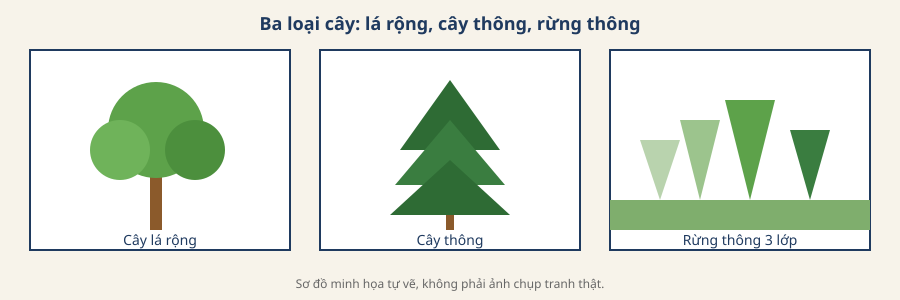

Vẽ cây và tán lá: cây lá rộng, cây thông và rừng thông
Tác giả: Ruler
Cây xuất hiện trong gần như mọi bức phong cảnh, và cây thay đổi theo mùa rõ hơn bất kỳ chủ đề nào khác. Bài này dạy bạn vẽ ba loại cây: cây lá rộng với tán tròn, cây thông với tán hình tam giác, và rừng thông với nhiều lớp cây xa gần. Bạn chỉ cần kỹ thuật ướt trên ướt đã học trong bài "Kỹ thuật loang màu (wet-on-wet): màu chảy, mép mềm, không vệt", kỹ thuật cọ khô trong bài "Vẽ trên giấy khô (wet-on-dry): nét sắc, chồng lớp, chi tiết", và cách lấy màu ra trong bài "Vẽ mây và bầu trời: mây trắng, mây bão, hoàng hôn".

Sơ đồ minh họa tự vẽ — không phải ảnh chụp tranh thật. Ba ô: cây lá rộng với tán tròn và thân nâu, cây thông với tán tam giác và cành chéo xuống, rừng thông với ba lớp cây nhạt dần về phía xa.
Nhìn cây trước khi vẽ cây
Bạn vẽ cây đẹp hơn khi bạn hiểu cây mọc như thế nào. Thân cây nhỏ dần khi lên cao, cành nhỏ dần khi vươn ra ngoài. Cành chính mọc chéo ra từ thân, cành nhỏ mọc ra từ cành chính. Olly Farmer viết trên Prominent Painting rằng cây lá rộng có tán lá tròn, mọc thành cụm, còn cây lá kim như thông và vân sam có hình tam giác với lá kim có kết cấu. Cây liễu rủ có cành buông xuống, mềm và mảnh.
Bạn quan sát cây thật trước khi vẽ: ánh sáng lọc qua lá như thế nào, bóng tạo chiều sâu ra sao, màu sắc thay đổi trong cùng một cây như thế nào. Bạn không cần vẽ từng chiếc lá. Bạn vẽ khối lá, gợi ý thay vì vẽ từng chi tiết, giống như bài "Phong cảnh nhỏ: núi, biển, trăng — vẽ từ xa đến gần" đã dạy: đơn giản hóa, gợi ý thay vì vẽ từng chi tiết.
Màu cho cây: xanh lá pha từ vàng và xanh dương
Bạn không cần tuýp màu xanh lá pha sẵn. Bạn pha xanh lá từ vàng và xanh dương trong hộp màu của mình. Olly Farmer viết rằng bạn trộn xanh sap với vàng đất để có tông xanh tự nhiên cho tán lá, và trộn xanh sap với xanh viridian và một chút xanh dương để có màu xanh đậm cho lá kim. Bạn thêm vàng vào màu xanh để có lá non mùa xuân, thêm nâu đất để có lá già mùa thu.
Bạn pha màu nâu cho thân cây từ nâu đất trộn một chút nâu đậm, và thêm một chút xanh ultramarine cho vùng thân trong bóng. Thân cây không phải một màu duy nhất: thân có vùng sáng, vùng giữa và vùng tối, giống như mọi vật khác.
Bạn dùng giấy màu nước 300 gsm, cold press, khổ nhỏ. Bạn cần cọ tròn cỡ 8–12 cho thân và vùng lớn, cọ tròn nhỏ cỡ 2–4 cho cành và chi tiết, cọ dẹt cho kết cấu tán lá, và có thể thêm cọ quạt cho hiệu ứng lá. Bạn cũng cần khăn giấy, hai lọ nước và một miếng bọt biển nhỏ.
Cây 1: cây lá rộng với tán tròn
Bạn vẽ cây lá rộng trong 4 bước.
Bước 1: phác thảo nhẹ bằng bút chì. Bạn vẽ thân cây và cành chính bằng bút chì HB, nét nhẹ. Thân cây nhỏ dần lên trên, cành chính mọc chéo ra từ thân.
Bước 2: tô thân và cành. Bạn pha màu nâu ấm từ nâu đất và một chút nâu đậm. Bạn bắt đầu từ gốc thân với màu đậm nhất, dùng cọ tròn cỡ 8, tô lên trên với nét nhẹ dần. Bạn vẽ cành bằng nét ngày càng mảnh.
Bước 3: tạo khối tán lá. Bạn pha màu xanh từ xanh sap và vàng đất. Bạn dùng cọ ẩm với nét nhẹ, bắt đầu bằng kỹ thuật ướt trên ướt cho khối lá chính: bạn làm ướt vùng tán lá trước, rồi chấm màu xanh vào, để màu tự loang. Bạn chấm thêm màu xanh đậm vào vùng còn ướt để tạo chiều sâu. Bạn chừa những khoảng trống nhỏ cho ánh sáng xuyên qua.
Bước 4: thêm kết cấu và chi tiết. Khi lớp đầu đã khô, bạn thêm kết cấu bằng kỹ thuật cọ khô: cọ gần khô với màu đặc, kéo nhẹ trên bề mặt giấy để tạo vệt xước, hợp với vỏ cây xù xì và lá có kết cấu. Bạn chấm bằng bọt biển để tạo cụm lá. Bạn thêm tông tối hơn ở vùng bóng, và chấm màu xanh nhạt hơn làm điểm sáng.
Bạn đừng vẽ tán lá đối xứng. Cây trong tự nhiên không hoàn hảo. Bạn thay đổi hình cành và mật độ tán lá để cây trông thú vị hơn. Bạn cũng đừng tô tán lá một màu duy nhất: cây trông phẳng và giống tranh hoạt hình khi chỉ có một màu xanh đều.
Cây 2: cây thông với tán hình tam giác
Cây thông dễ vẽ hơn cây lá rộng vì hình dáng của nó đơn giản: một hình tam giác với thân thẳng ở giữa.
Bước 1: vẽ khung hình tam giác. Bạn vẽ nhẹ một hình tam giác cho hình dáng tổng thể của cây.
Bước 2: vẽ thân cây. Bạn vẽ một thân thẳng, hẹp, bằng màu nâu tông giữa.
Bước 3: vẽ cành. Bạn vẽ cành bằng nét chéo xuống, bắt đầu đậm ở chỗ nối với thân và nhẹ dần khi ra ngoài. Cành dưới dài hơn và nằm ngang hơn cành trên.
Bước 4: vẽ lá kim. Bạn pha màu xanh đậm từ xanh sap, xanh viridian và một chút xanh dương. Bạn dùng nét ngắn, nhanh để gợi lá kim. Bạn vẽ từ tối sang sáng. Bạn chừa khoảng trắng cho tuyết nếu vẽ cảnh mùa đông.
Dylla Setyadji viết trên Homesthetics rằng bạn vẽ cây thông ở tiền cảnh bằng cọ mỏng nhất trong bộ, thường là cỡ 2, nhúng vào màu xanh đậm đã pha loãng một chút, rồi vẽ đường dọc bằng đầu cọ, sau đó vẽ hình chữ V ngược để tạo lá nhọn và thêm vài nét cho cành đầy đặn hơn. Cây càng gần mắt bạn càng vẽ tối hơn và ngắn hơn khi ra phía trước, vì đó là quy luật phối cảnh: vật càng gần càng tối.
Cây 3: rừng thông với ba lớp cây
Rừng thông là bài tập phối cảnh không khí: cây xa nhạt và lạnh, cây gần tối và ấm, giống như núi trong bài "Phong cảnh nhỏ: núi, biển, trăng — vẽ từ xa đến gần".
Bạn vẽ rừng thông trong 8 bước theo Dylla Setyadji.
Bước 1: phác thảo. Bạn phác thảo nhẹ cảnh rừng bằng bút chì, với đồi làm nền và thân cây thông ở gần mắt bạn. Bạn đừng ấn bút chì quá mạnh, nếu không nét chì đen sẽ không tẩy được và không hòa với màu nước.
Bước 2: vẽ bầu trời. Bạn dùng cọ dẹt nhúng nước sạch quét ngang bầu trời. Bạn pha loãng một chút xanh dương đậm và tô bầu trời bằng nét chấm nhanh, không kéo dài. Bạn đừng lo nếu không phủ hết và còn chỗ trắng: những chỗ trắng đó tạo cảm giác mây và làm bầu trời sinh động hơn.
Bước 3: vẽ đồi. Khi bầu trời đang khô, bạn làm ướt vùng đồi bằng cách tương tự và tô màu xanh đã pha loãng. Bạn tô một phía đồi nhạt hơn và phía còn lại đậm hơn để tạo chiều sâu. Bạn dùng nhiều màu hơn ở phía trái, nhưng đừng để nước trên giấy khô mất, vì bạn vẫn cần nước chảy cho kỹ thuật ướt trên ướt.
Bước 4: thêm bóng cây thông. Khi lớp nền của đồi còn ướt, bạn dùng cọ nhọn vẽ bóng cây thông lên trên. Bạn vẽ một đường dọc và thêm nét xoắn ốc bao quanh tới khoảng giữa thân. Bạn đừng lo màu lem và hình méo: đó chính là hiệu ứng bạn muốn. Bóng cây này tạo chiều sâu, bạn có thể kéo dài lên bầu trời để gợi cảm giác rừng trải dài xa tít.
Bước 5: vẽ tiền cảnh. Bạn làm ướt vùng đất và tô màu xanh nhạt làm nền, dùng cọ dẹt, lần này bạn cố gắng không chừa khoảng trắng. Bạn tô tiếp màu xanh đậm hơn lên trên để hai tông hòa vào nhau, không có viền cứng.
Bước 6: vẽ đồi lớp thứ hai. Bạn dùng màu xanh đậm đặc hơn một chút, nhưng không quá đặc, để tạo viền thô cho đồi, làm đồi nổi bật và gần mắt hơn. Bạn giữ đỉnh đồi tối hơn chân đồi để tạo hiệu ứng chuyển màu. Bạn dùng cọ nhọn vẽ lại bóng cây thông để chúng rõ hơn: vẽ đường dọc và hình chữ V ngược ở hai đầu để tạo dáng cây thông rậm rạp.
Bước 7: vẽ cây thông ở tiền cảnh. Đây là điểm nhấn chính của bức tranh. Bạn dùng cọ mỏng nhất, nhúng màu xanh đậm pha loãng, vẽ đường dọc theo nét phác thảo, rồi vẽ hình chữ V ngược cho lá nhọn. Bạn vẽ cây tối dần và ngắn dần khi ra phía trước.
Bước 8: hoàn thiện. Bạn vẽ cây thông sát nhau tới mép giấy, cây gần mắt tối hơn cây xa. Bạn để tranh khô hoàn toàn rồi xem có cần thêm màu ở chỗ nào không, nhớ quy tắc: vật càng gần, màu càng tối.
Kết cấu tán lá: 5 cách
Bạn tạo kết cấu cho tán lá bằng 5 cách, mỗi cách cho một hiệu ứng khác nhau.
Ướt trên ướt. Bạn làm ướt giấy trước rồi tô màu, để màu tự lan. Cách này cho tán lá mềm, hòa quyện, hợp với cây lá rộng trong sương.
Cọ khô. Bạn dùng cọ gần khô với màu đặc, kéo nhẹ trên bề mặt giấy. Cách này tạo vệt xước, hợp với vỏ cây xù xì và lá có kết cấu.
Muối. Bạn rắc muối ăn lên màu còn ướt. Khi khô, muối tạo hoa văn lốm đốm trông như cụm lá hoặc ánh sáng lốm đốm qua tán cây.
Bọt biển. Bạn nhúng bọt biển tự nhiên vào màu và chấm lên giấy để tạo kết cấu lá ngay lập tức.
Vẽ âm bản (negative painting). Bạn vẽ vòng quanh vùng sáng thay vì vẽ chính vật đó. Cách này tạo ánh sáng xuyên qua cành rất hiệu quả, và bạn dùng lại kỹ thuật này trong bài "Vẽ nhà và phố nhỏ" khi vẽ ánh sáng qua cửa sổ.
Cây theo bốn mùa
Bạn vẽ cùng một cây qua bốn mùa để luyện pha màu.
Mùa xuân: bạn dùng màu xanh nhạt, tươi, thêm vàng vào hỗn hợp màu. Bạn thêm chút hồng, trắng hoặc vàng cho hoa nở. Bạn giữ tán lá lỏng và nhẹ, tập trung vào cảm giác cây mới mọc.
Mùa hè: bạn dùng màu xanh đậm, sâu. Bạn tạo tán lá dày bằng nhiều lớp. Bạn thêm bóng đậm và nhấn mạnh sự đầy đặn của cây.
Mùa thu: bạn dùng vàng, cam và đỏ rực rỡ. Bạn thay đổi màu trong cùng một cây. Bạn tạo hoa văn lá đổi màu rải rác, để màu hòa vào nhau khi còn ướt cho chuyển màu tự nhiên.
Mùa đông: bạn tập trung vào cấu trúc cành trần. Bạn dùng màu nâu lạnh hơn cho thân cây. Bạn thêm bóng xanh nhạt trên cành có tuyết, và chừa khoảng trắng cho tuyết.
Lỗi thường gặp
Cây trông phẳng và giống tranh hoạt hình. Bạn thay đổi độ đậm nhạt của màu và thêm bóng. Cây không phải một màu đặc duy nhất.
Hình cây quá đối xứng. Thiên nhiên không hoàn hảo. Bạn thay đổi hình cành và mật độ tán lá.
Cành trông cứng và không tự nhiên. Bạn quan sát cây thật và thấy cành nhỏ dần và cong dần. Bạn luyện vẽ đường cong mềm, không vẽ đường thẳng.
Tán lá trông đều một màu. Bạn dùng nhiều kỹ thuật trong cùng một cây: ướt trên ướt, bọt biển, cọ khô.
Bạn vẽ cây theo thứ tự từ xa đến gần: cây xa trước với tông nhạt, xanh và ít chi tiết; cây giữa sau với tông vừa; cây gần cuối cùng với màu đậm nhất và chi tiết nhất. Bạn để mỗi lớp khô trước khi thêm lớp tiếp theo, và dùng kỹ thuật vẽ âm bản để định hình cây.
Bài tập: một cây, ba lần vẽ
Bạn chọn một cây gần nhà hoặc trong ảnh. Bạn vẽ cây đó ba lần trên ba tờ giấy nhỏ: lần một chỉ dùng kỹ thuật ướt trên ướt, lần hai chỉ dùng cọ khô và bọt biển, lần ba kết hợp cả hai. Bạn đặt ba bức cạnh nhau và xem bức nào giống cây thật nhất, bức nào bạn thích nhất. Bạn sẽ thấy cùng một cây mà ba kỹ thuật cho ba cảm giác khác nhau, và bạn biết khi nào dùng kỹ thuật nào.
Kết luận
Cây lá rộng vẽ bằng khối tán lá ướt trên ướt và cọ khô cho chi tiết; cây thông vẽ bằng khung tam giác và nét chéo xuống; rừng thông vẽ bằng ba lớp cây từ nhạt đến đậm, cây càng gần càng tối. Bạn pha xanh lá từ vàng và xanh dương, pha nâu thân từ nâu đất và xanh ultramarine cho vùng bóng, và đừng tô tán lá một màu duy nhất. Bạn vẽ cùng một cây qua bốn mùa để luyện pha màu.
Bài tiếp theo, bài "Vẽ nước: sông, biển, mưa — mặt nước phẳng, gợn sóng và phản chiếu", dùng lại quy tắc xa nhạt gần đậm này cho mặt nước, và dạy bạn vẽ phản chiếu của chính những cây bạn vừa vẽ.
Nguồn tham khảo
- Olly Farmer, Prominent Painting, "How To Paint Trees In Watercolor: Simple Steps" — giải phẫu cây (thân nhỏ dần, cành nhỏ dần, tán lá rộng tròn thành cụm, lá kim tam giác); cây lá rộng 4 bước (thân nâu đất + nâu đậm, tán lá xanh sap + vàng đất ướt trên ướt, cọ khô và bọt biển); cây thông 4 bước (khung tam giác, thân nâu, cành chéo xuống, lá kim xanh sap + viridian + xanh dương); 5 cách tạo kết cấu (ướt trên ướt, cọ khô, muối, bọt biển, vẽ âm bản); cây bốn mùa; chiều sâu từ xa đến gần; lỗi cây phẳng, đối xứng, cành cứng, tán lá đều màu (truy cập 23/11/2026, W-14 mở trực tiếp): https://prominentpainting.com/how-to-paint-trees-in-watercolor/
- Dylla Setyadji, Homesthetics, "How To Paint A Pine Forest In Watercolor? A Beginner's Guide" — 8 bước vẽ rừng thông (phác thảo nhẹ, bầu trời ướt trên ướt bằng cọ dẹt, đồi một phía nhạt một phía đậm, bóng cây thông khi nền còn ướt, tiền cảnh không chừa trắng, đồi lớp hai đậm hơn, cây thông tiền cảnh bằng cọ cỡ 2 với hình chữ V ngược, hoàn thiện theo quy tắc càng gần càng tối); giấy Arches 300 gsm cold press; cọ Cotman bộ 4 (truy cập 23/11/2026, W-14 mở trực tiếp): https://homesthetics.net/how-to-paint-pine-forest-watercolor/